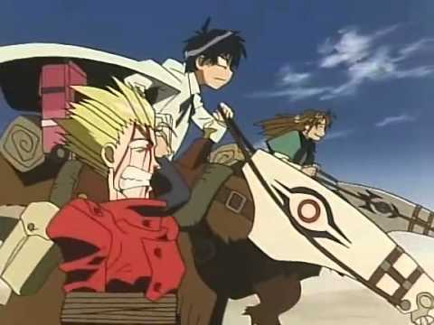

In the heart of anime fandom, there exist a variety of pools for anime fans to circle around to discuss the history of the medium or fond memories of yester-year. "Trigun" is fondly recalled as a show that never quite transcended anime culture in the way that "Cowboy Bebop" or "Fullmetal Alchemist" did, but still popular enough to be considered a cult classic, alongside shows like "The Vision of Escaflowne," "FLCL" or "Serial Experiments Lain." It was the kind of show that most seasoned anime fans would at least recognize. But being released in 1998, would it still hold up today? Is it still worth the effort for newcomers, or even fans with fond memories, to revisit the show decades later?The short answer is no. while a classic of its time, "Trigun" has not aged well.The core concept behind "Trigun," based off the manga by Yasuhiro Nightow, is a solid one. Set in an alternate science-fiction future, humans and alien species live together across several planets along the galaxy, most of which are baren desert wastelands. In this futuristic western setting, there exists Vash the Stampede, a tall man in red and heartless criminal with a bounty of $$60 billion (read "double-dollars," an alternate currency to what you and I are used to) on his head. And what is the galaxy's most infamous outlaw like in person? He's actually not a criminal at all, and is quite a nice guy! It just happens that trouble seems to follow him in a string of bad luck, either through being clumsy or by dodging pursuers after his bounty, and this leads to a wake of destruction in every town he visits. It's a good thing he is a crack shot with his pistols, as this has allowed him to save countless lives from the carnage (Vash is actually a strict pacifist, and no innocent people have died from his incidents when he passes through town). After a strong first episode, it seems the show will follow the comedic and action-packed adventures of Vash, followed carefully by Milly and Meryl, two insurance agents tasked to try to prevent him from causing any more damage. And the first few episodes do follow this pattern, but rather quickly in the show's 26-episode run, it becomes clear that comedy isn't the main goal, or at least the production team wasn't confident enough to follow that path. Vash is actually an immortal plant-based alien, and has a twin brother named Knives who is his exact opposite, killing anyone he can to lure Vash out. The poigniant personal dilemas that come out of this conflict are appropriate for a western, but it is drawn out for far too long. It would have been better if the series's length was cut in half, or at the very least, utilize more of the episodes for comedy (while I can't recall for certain, I am fairly sure that less than a quater of the episodes are comedic adventures of bad luck like the synopsis would suggest). No matter which part of the story you appreciate, its inconsistency makes it feel like a lost opportunity. It doesn't help that the animation doesn't hold up well. The character designs are actually quite distinct and heavily stylized, thanks largely to Nightow's original imagination, even though most of the world takes place in empty sandscapes. The animation however was done in 4:3 aspect ratio on cel, just a couple years before digital came about, and like the average anime from this era and below, the animation is stiff, limited or janky, and looking faded on modern DVD. The only notable animation is in some of Vash's comedic facial expressions when caught in a bad spot. On that end, the English dub is about as bad as most dubs were at the time, which can be a good or bad thing based on nostalgic factors for you, but I have to commed Johnny Yong Bosch's performance as Vash, an iconic and pitch-perfect portrayal that would be the very start of his long career in anime voice-acting. The music also ages better than the visuals, in an inspired rock style that matches the world. I still have fond memories of Vash and the rest of the cast, and it is worth watching the first two or three episodes to enjoy the comedy. Even watching the eventual followup film "Badlands Rumble" is worthwhile. Western-stylized anime are hard to come by, so if you are already done with "Cowboy Bepop," and want something else in the same vein, this might fill the void. But if asked to watch through the entire series again, I would answer with a solid "no." At the very least, try to reanimate the series into a trilogy of films, or maybe a new anime based on "Trigun Maximum" (the alternate manga that ended publication in 2007). If the animation can be brought up to newer standards and the story condensed to its best or more necessary parts, then we might have a proper classic on our hands.
- "Ani" More reviews can be found at : https://2danicritic.github.io/ Previous review: review_Triage_X Next review: review_Trigun_-_Badlands_Rumble